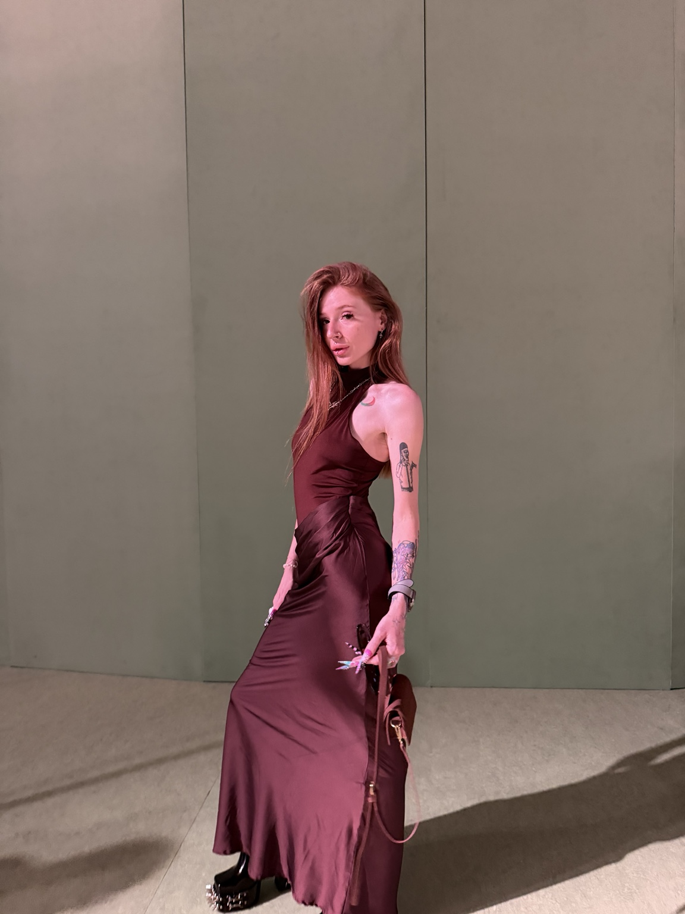
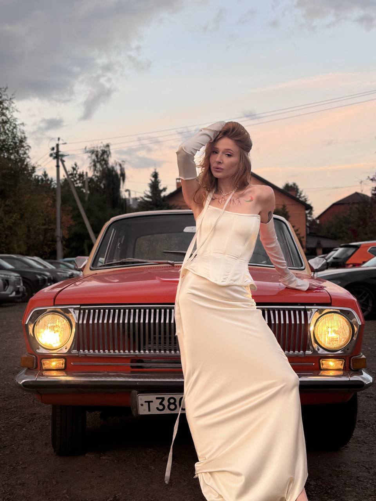
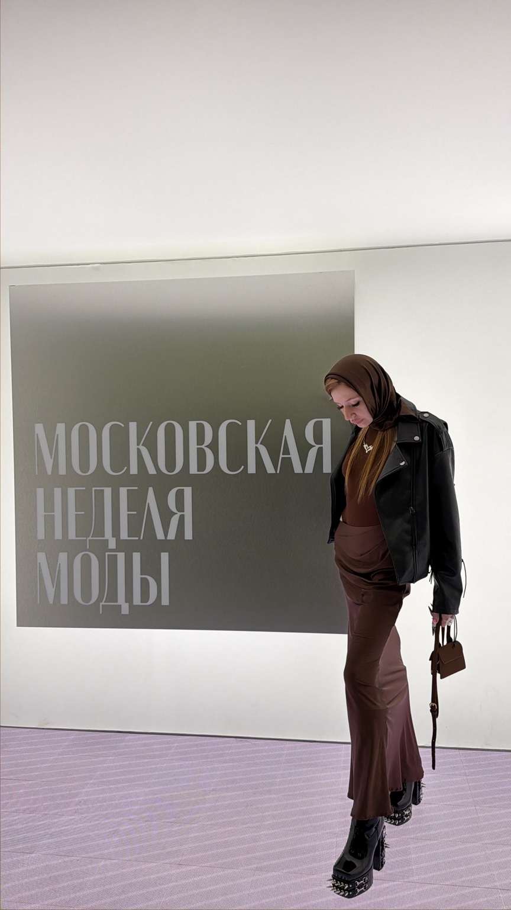

3 студии / около 100 человек
территориальный управляющий сети «пилки» в екатеринбурге. прямое управление командой, операционка, стандарты, результат точек и открытие новых студий
обо мне
я вообще не теоретик. мне надо залезть в проект руками и покопаться там по локоть: понять, где деньги, где люди, что тормозит и что надо сделать, чтобы всё поехало. со стороны я почти не умею работать



как я работаю
мне надо покопаться в проекте по локоть
мне вообще не впадлу самой открыть смету, написать человеку, поковырять сайт, проверить разработку, съездить на площадку или пересобрать кастинг. не потому что я хочу делать работу за всех, а потому что если конкретно здесь всё встало — значит, надо разобраться
дальше уже собираю нормальных людей вокруг и отдаю им их куски. моя задача не носиться героем по проекту, а сделать так, чтобы он не рассыпался, пока каждый занят своим
база
территориальный управляющий сети «пилки» в екатеринбурге. прямое управление командой, операционка, стандарты, результат точек и открытие новых студий
делала маркетинг и контент примерно для девяти гео: адаптировала подачу под разные страны, собирала производство, работала с командами, бюджетами и цифрами
события, шоу, съёмки, площадки, партнёры, кастинг, подрядчики и всё, что должно сойтись в одну дату
могу разложить, что человек должен увидеть и сделать, собрать структуру, тексты и прототип, а потом нормально говорить с дизайном и разработкой. репозиторий меня не пугает
образование
профильная программа по управлению маркетингом, 2025
отдельно училась переговорам, тайм-менеджменту и разработке цифровых продуктов, сайтов и приложений. «директор по маркетингу» здесь не образование, а моя рабочая роль
свои люди
с кем мне хорошо
мне хорошо в командах, где можно нормально спорить, быстро решить и пойти делать дальше. без театра из должностей и бесконечного «давайте вернёмся к этому на следующем созвоне»
если есть сильная идея, нормальные люди и готовность двигаться — я могу очень глубоко в это зайти